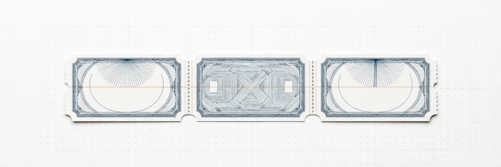
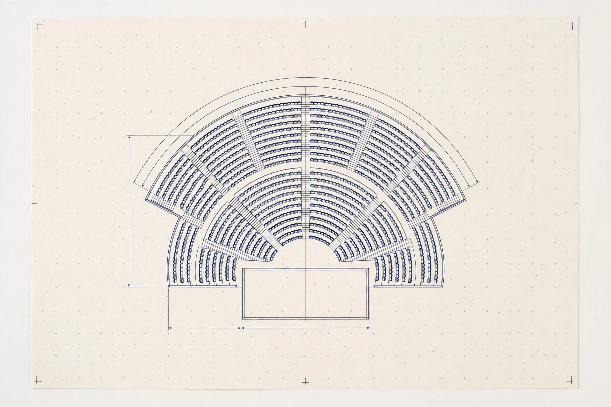
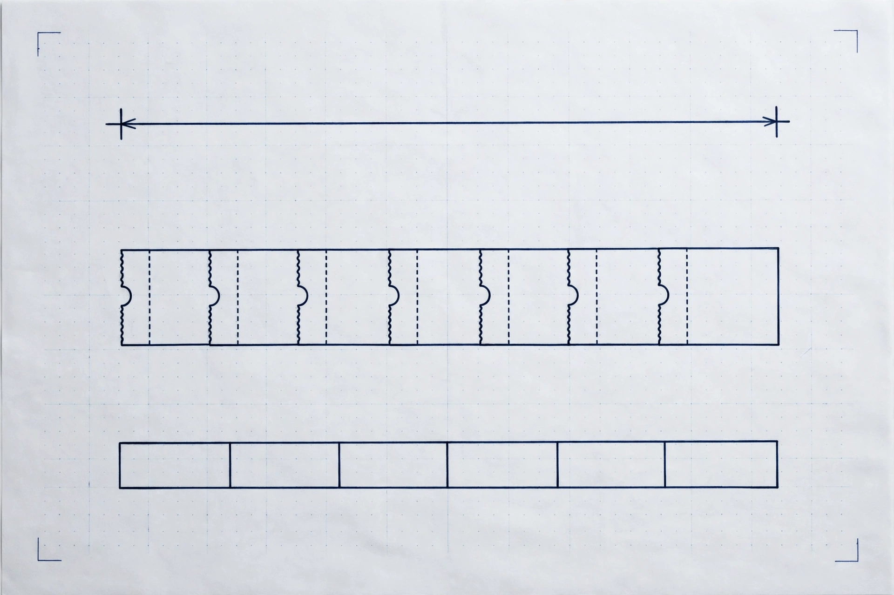

Gut (LLM alone)
Clairo
Her intimate, moody indie-pop fits a New York Billie Eilish audience well.
No. 01 — The problem
It tells a promoter how many tickets he must sell before he signs.
One number decides the signature: how many tickets must sell before the guarantee pays for itself — checked against live taste evidence, not a guess.



Venue plan, proof sheet. Blue-black line drawing on studio-white proof paper: seating bowl and stage, with crop marks and a dot grid. No text or numbers are baked into the drawing — the break-even number on this page is real page text, computed live.
Example deal, not a live verdict — Billie Eilish · New York · 2,084 tickets to break even.
No. 02 — Three arms
Recorded example — 29 Oct 2026 trial, not a live verdict. This section never runs a verdict. Run the app for a live verdict on your own offer.
Billie Eilish in New York — who is the best opening act for this audience? The same offer the app checks: guarantee $250,000, ticket price $120 — break-even 2,084 tickets.
Three lanes, one question. Three stage lanes on studio-white proof paper: an acoustic singer, a pop performer, and a hip-hop performer. No numbers are baked into the drawing.
Clairo
Her intimate, moody indie-pop fits a New York Billie Eilish audience well.
Olivia Rodrigo
The Qloo-grounded pick on this recorded run.
Armani White
The only viable opening-act candidate supported by the supplied Wikidata facts, via the 2022 single “Billie Eilish” by Armani White.
Where the gut pick was wrong on this run: Gut picked Clairo while Graph picked Olivia Rodrigo; Web picked Armani White while Graph picked Olivia Rodrigo.
No. 03 — The method
Offer, evidence, count. Three panels on proof paper: a contract sheet with a pen, a magnifying glass over audience dots, and a ticket with a dimension line.
Artist, city, guarantee — and the room, if it is known. A starting example is prefilled; it is not a real deal.
Audience, openers, venue, and prices — each with its receipt, each re-runnable live from the drawer below.
A break-even ticket count when the evidence is complete; "Verdict withheld: evidence incomplete" with the missing legs named, never a fabricated number.
No. 04 — What it refuses
Refused, in writing. A deal-sheet contract on studio-white proof paper with a large refusal cross over an unsigned signature line, pen beside it. No numbers are baked into the drawing.
The verdict depends on Qloo — it cannot render without it. If Qloo is unconfigured or any required evidence leg fails, the page shows “Verdict withheld: evidence incomplete” with no numbers at all.
No mock data, no demo numbers, no silent fallback — ever.
No sellout percentage is ever shown when capacity is unknown.
No personal data is sent to Qloo. Aggregate audiences only. Qloo affinities are aggregate taste-overlap signals — how much two audiences share — never predictions about any individual, and never a causal claim that a show will sell out.
No headcount is ever shown (Qloo returns matched areas and entities, not a population number). No sellout prediction is ever shown.
Check a live-show offer before you sign it. One number decides the signature.
Typical verdict time: 26–40 seconds — measured across the 3 recorded trials, 29 Oct 2026. Live Qloo + LLM calls, not instant.
No. 05 — The formula
Recompute it yourself from the live verdict numbers.

The count, drawn as a dimension. A dimension line, a ticket strip, and a segmented bar on studio-white proof paper. No numbers are baked into the drawing.
Break-even tickets = ceil(guarantee ÷ (ticket price − variable cost per ticket))
Run a verdict in the app to see its worked example — Open the app.
When capacity is known and break-even tickets exceed it, the verdict is: “Cannot break even in this room at this guarantee.” When capacity is unknown, no sellout percentage is shown at all.
No personal data is sent to Qloo. Aggregate audiences only. If Qloo is not configured, the page fails closed with a visible 503 — never mock data. Qloo affinities are aggregate taste-overlap signals — how much two audiences share — never predictions about any individual, and never a causal claim that a show will sell out.